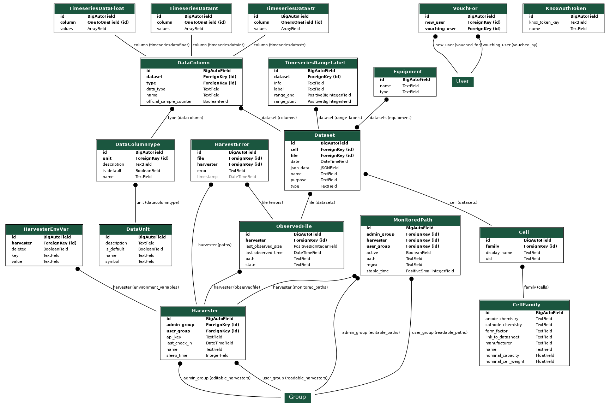

Gavanalyser Development Guide¶
Project Folder Structure¶
Below is a tree diagram of the folder structure of this project and a short description of what is in each folder.
Running¶
To run the entire stack for development¶
Follow the First Time Quick Setup guide first.
Next, create a link for docker-compose.dev.yml to docker-compose.override.yml.
If your operating system does not provide link capability, create a copy of
docker-compose.dev.yml but remember to copy any changes you make to
docker-compose.override.yml back to docker-compose.dev.yml or they will
be lost (docker-compose.override.yml is ``.gitignore``d):
ln -s docker-compose.dev.yml docker-compose.override.yml
docker-compose up --build
The main difference from the production docker-compose.yml file is that the developer
can edit all the code in the frontend and backend files, and this will automatically
compile and restart the dockerised frontend and backend servers appropriately, useful in
development. Additionally, the development configuration includes a Harvester instance so that
you do not have to create Harvesters in an additional step.
You may wish to edit the .env file to change the FRONTEND_PORT. If you do so, remember to change the FRONTEND_VIRTUAL_HOST to include the new port. You will have to rebuild the frontend container for port changes to take effect (otherwise they’ll change for Django but not for the frontend).
Testing¶
Tests are run automatically with a GitHub Action (.github/workflows/unit-test.yml),
and can also be run manually during development.
Harvester unit tests¶
The test-suite runs over a set of battery tester files in the directory specified by
GALV_HARVESTER_TEST_PATH.
To access the test-suite, contact Martin who can provide the necessary credentials to
acquire the files from the remote repository.
docker-compose -f docker-compose.test.yml run --rm harvester_test
Backend unit tests¶
The Django backend has Django Rest Framework tests, using FactoryBoy and Faker.
docker-compose -f docker-compose.test.yml run --rm app_test python manage.py test
Frontend unit tests¶
Frontend unit tests are run with Jest.
docker-compose -f docker-compose.test.yml run --rm frontend_test npm test
Components and Technology¶
This section provides a brief overview of the technology used to implement the different parts of the project.
Docker¶
Dockerfiles are provided to run all components of this project in containers. A docker-compose file exists to simplify starting the complete server side system including the database, the web app and the Nginx server. All components of the project can be run natively, however using Docker simplifies this greatly.
A Docker container is also used for building the web app and its dependencies to simplify cross platform deployment and ensure a consistent and reliable build process.
Backend server¶
The server is a Django web application, which uses the Django REST Framework to provide a REST API. The following 3rd party additions are also included:
-
Token authentication
-
Record filtering and searching
-
CORS handling
OpenAPI REST API specification
There are tweaks to the basic Django systems for:
providing an unmanaged database table for Timeseries data
table created in
backend/backend_django/galv/management/commands/init_db.pycalled in
backend/server.shunmanaged model included in
backend/backend_django/galv/models.py
prefilling the database with default columns and units
backend/backend_django/galv/fixtures/contains fixture filesloaded in
backend/server.sh
creating superuser account
created by
backend/backend_django/galv/management/commands/create_superuser.pycalled in
backend/server.shconfiguration via
.env.secret’sDJANGO_SUPERUSER_PASSWORDentry
providing custom permission mechanisms for Harvesters and Cell/Cell Family/Equipment
code in
backend/backend_django/galv/permissions.pyused in
backend/backend_django/galv/views.py
extending
drf-spectacularto play nicely withdjango-rest-knoxcode in
backend/backend_django/galv/schema.py
providing a mechanism for yielding data rapidly into the database via SQL’s COPY directive
code in
backend/backend_django/galv/utils.py
Additionally, there are some tricks here and there in
backend/backend_django/galv/serializers.py and
backend/backend_django/galv/models.py.
It’s hard to say what’s counterintuitive off the bat, however,
so if something confuses you and you figure it out, please document it here!
Generally speaking, most of the logic is taken care of in serializers.py,
with endpoint control and documentation mostly handled in views.py.
A major exception is the Harvester report/ endpoint which has its
logic in views.py.
Harvesters have an api_key they use to authenticate with the server.
This is created the first time the Harvester model is saved in models.py.
Harvesters¶
The harvesters are python scripts which monitor directories for tester datafiles, parse them according to their format, and send the data and any metadata to the Django REST API. The harvesters run continually, with an optional sleep duration in their cycle.
The docker-compose.dev.yml file has an example of how to automatically configure
a new harvester instance in the initial docker compose command.
Frontend web application¶
The frontend is written using TypeScript, the React framework and Material-UI components.
It has its own caching system to reduce calls made to the REST API and their consequent loading times.
Database¶
The project uses PostgreSQL for its database. Other databases are currently not supported. An entity relationship diagram is shown below.
Documentation¶
Documentation is written in Sphinx’ reStructured Text and produced by Sphinx.
Documentation is located in the /docs/source directory.
Contributor guide¶
We very much welcome contributions. Please feel free to participate in discussion around the issues listed on GitHub, submit new bugs or feature requests, or help contribute to the codebase.
If you are contributing to the codebase, we request that your pull requests identify and solve a specific problem, and include unit tests for code that has been added or modified, and updated documentation if relevant.